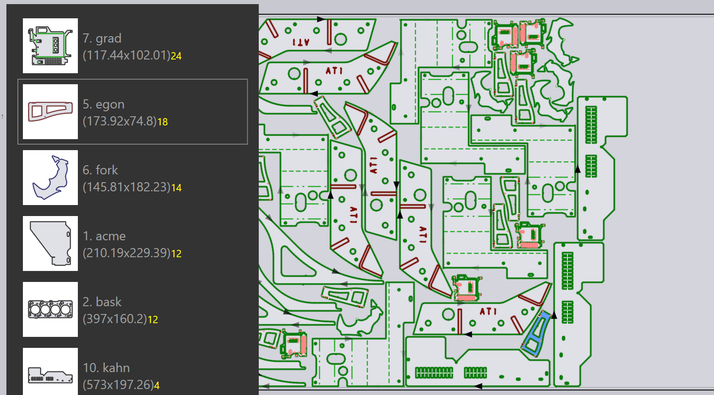

โหมดการ Nest
เครื่องยนต์ Nesting ใน TecZone Laser สามารถจัดทำเลย์เอาต์จากงาน Nesting ได้ อย่างมีประสิทธิภาพ คุณยังสามารถนำเลย์เอาต์ที่ Nest แล้วใด ๆ (หรือแม้กระทั่งเริ่มต้นด้วย แผ่นว่าง) แล้วเพิ่มชิ้นงาน_แบบโต้ตอบ_ เคลื่อนย้าย และหมุนชิ้นงานได้
การ Nest อัตโนมัติ
ในช่วงเริ่มต้น คุณเพิ่มแผ่นวัสดุและชิ้นงานเข้าสู่งาน Nesting จากนั้น เมื่อคุณสลับไปที่ แท็บ Layouts ระบบจะทำการ Nest โดยอัตโนมัติ หลังจากนั้น คุณ สามารถเปลี่ยนรายการชิ้นงาน หรือแก้ไขการตั้งค่าบางอย่าง และจะมีตัวเลือก ให้ทำการ_ Nest ชิ้นงานใหม่_ด้วยการตั้งค่าที่หลากหลาย
การเพิ่มชิ้นงานเพิ่มเติมลงในแผ่น
สมมุติว่า คุณได้เพิ่มชิ้นงานเพิ่มเติมบางชิ้นในงาน Nesting แล้ว แต่ยังไม่ได้ถูก Nest เพื่อใช้เครื่องยนต์ Nesting วางชิ้นงานเหล่านี้ลงบนแผ่น ให้เลือกแท็บ layout[1]ที่คุณต้องการใช้ (บ่อยครั้งจะเป็นแผ่นสุดท้าย ซึ่งมักจะถูกเติมเพียงบางส่วน) จากนั้น คลิกที่ไอคอน Nest จากแถบเครื่องมือทางซ้าย แล้วเลือก Pack remaining sheet area automatically [2]

ชิ้นงานที่ยังไม่ได้ Nest จะถูกวางในพื้นที่ที่เหลืออยู่ของแผ่น ตัวเลือกนี้จะไม่เปลี่ยนแปลงชิ้นงานใดๆ ที่ถูกวางไว้บนแผ่นแล้ว และบางครั้งจะถูกใช้สำหรับ Nest แผ่นบางส่วนด้วยตนเอง จากนั้นจึงสั่งให้ เครื่องยนต์ Nesting จัดการส่วนที่เหลือให้เสร็จ ภาพด้านล่างแสดง ชิ้นงานที่เพิ่งถูกเพิ่มใหม่ในสีเหลือง และคุณสามารถเห็นว่าชิ้นงานเก่ายังคงอยู่ในตำแหน่งเดิมไม่ได้ ถูกย้าย:

การจัดเรียงใหม่ – แผ่นที่เหลือ
หากคุณไม่จำเป็นต้องรักษาตำแหน่งของชิ้นงานเดิม คุณสามารถ ได้ผลลัพธ์ที่ดีกว่าโดยให้เครื่องยนต์ Nesting _จัดเรียง_แผ่นงานทั้งหมดใหม่ เลือก Rearrange to create a remainder sheet แล้ว TecZone Laser จะทำการจัดเรียงชิ้นงานทั้งหมดบนแผ่นงานใหม่ โดยพยายาม ให้ได้_แผ่นเหลือ_รูปสี่เหลี่ยมผืนผ้าด้านขวาที่สะอาด ซึ่งสามารถใช้เป็นวัตถุดิบสำหรับการ Nesting ครั้งถัดไป

ซึ่งจะเห็นได้ว่าแผ่นงานข้างต้นมีชิ้นงานเหมือนเดิม แต่ ถูกจัดให้แน่นขึ้น ซึ่งทำให้สามารถตัดแผ่นเหลือออกมาใช้งานได้

การจัด Nesting แบบ Manual
เปิดเลย์เอาต์เพื่อแก้ไขได้จากแท็บ Layouts ของ Job Panel หรือเปิดไฟล์ .fxlyt ที่คุณบันทึกไว้ก่อนหน้านี้
การเพิ่มชิ้นส่วน
คุณสามารถเพิ่มชิ้นส่วนไปยังเลย์เอาต์ได้โดยคลิกปุ่ม เพิ่ม บนแถบเครื่องมือด้านซ้าย จะแสดงรายชื่อชิ้นงานทั้งหมดในงาน Nesting:

คลิกที่ชิ้นส่วนจากรายการเพื่อเพิ่มลงในแผ่นงาน (เครื่องยนต์ Nesting จะ พยายามหาตำแหน่งที่เหมาะสมที่สุดสำหรับชิ้นงาน แต่คุณสามารถเปลี่ยนได้ ภายหลัง) คำอธิบายชิ้นส่วนใช้สีต่างๆ เพื่อบ่งบอกความหมายที่แตกต่างกัน ดังนี้:
|
วางชิ้นส่วนแล้ว 12 ชิ้น (จำนวนที่ต้องการ) |
ขาดชิ้นงานไป 2 ชิ้นจากจำนวนที่ต้องการ |
|
|
ต้องการ 18 ชิ้น แต่จัดวางไปแล้ว 20 ชิ้น (+2) |
|
ต้องการ 24 ชิ้น และจัดวางครบแล้ว |


มื่อคุณเลื่อนเมาส์เหนือชิ้นงานในรายการ TecZone Laser จะคำนวณ ตำแหน่งที่เหมาะสมและแทรกชั่วคราวลงในแผ่นเป็นสีน้ำเงิน เพื่อให้คุณประเมินได้ว่าเหมาะสมหรือไม่ ดังนั้น คุณสามารถ วางชิ้นงานหลายชิ้นได้อย่างรวดเร็วบนแผ่น เพียงแค่เลื่อนเมาส์เหนือพื้นที่ดังกล่าว แล้วคลิก

| เมื่อชิ้นงานถูกวางบนแผ่นแล้ว สามารถย้าย หมุน หรือทำซ้ำได้ โดยใช้ Placement Panel |